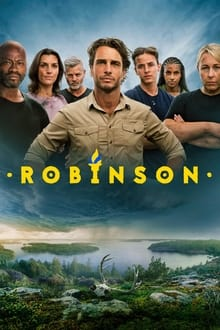
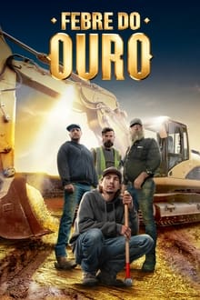
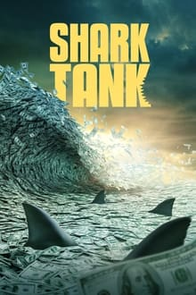
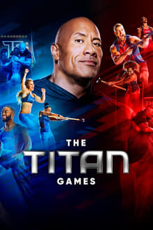
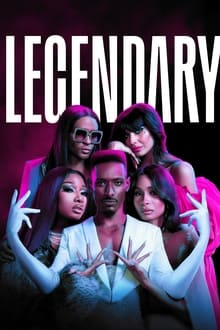
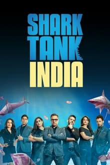
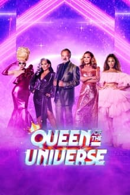

SUPERNATURAL
Desde que era pequeno, Sam Winchester (Jared Padalecki) tentava escapar do próprio passsado. Após a misteriosa morte de Mary (Samantha Smith), o pai de Sam passou a procurar vingança contra as forças do mal que mataram a esposa, destruindo qualquer ser maligno que cruze o seu caminho. Ao contrário de Sam, Dean (Jensen Ackles), seu irmão mais velho, sempre quis seguir os passos do pai. Sam parece determinado a se livrar do "negócio da família", mas sua vida está prestes a tomar um rumo indesejado quando não lhe resta outra escolha a não ser se unir ao irmão.
POPULARES


REALITY






